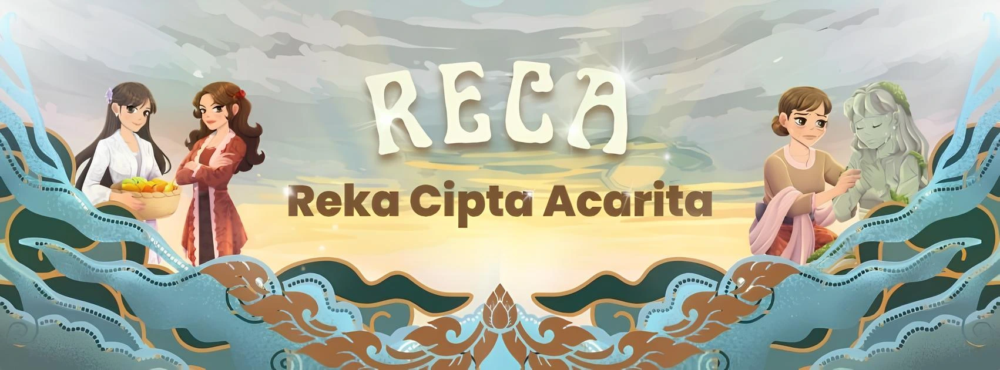
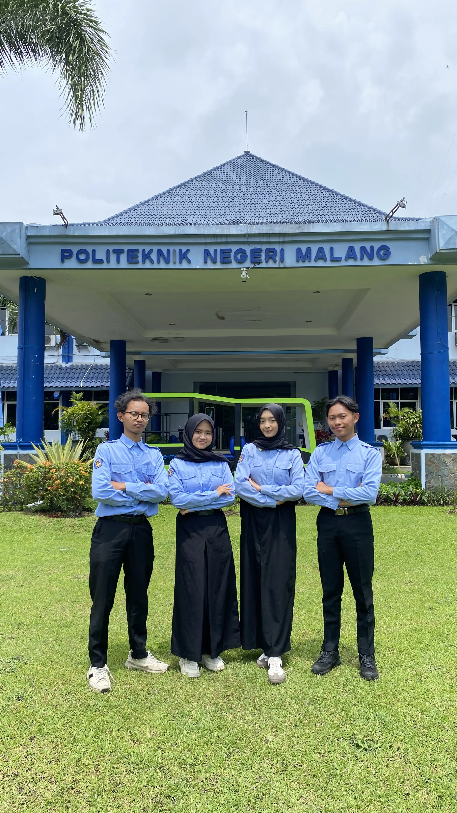
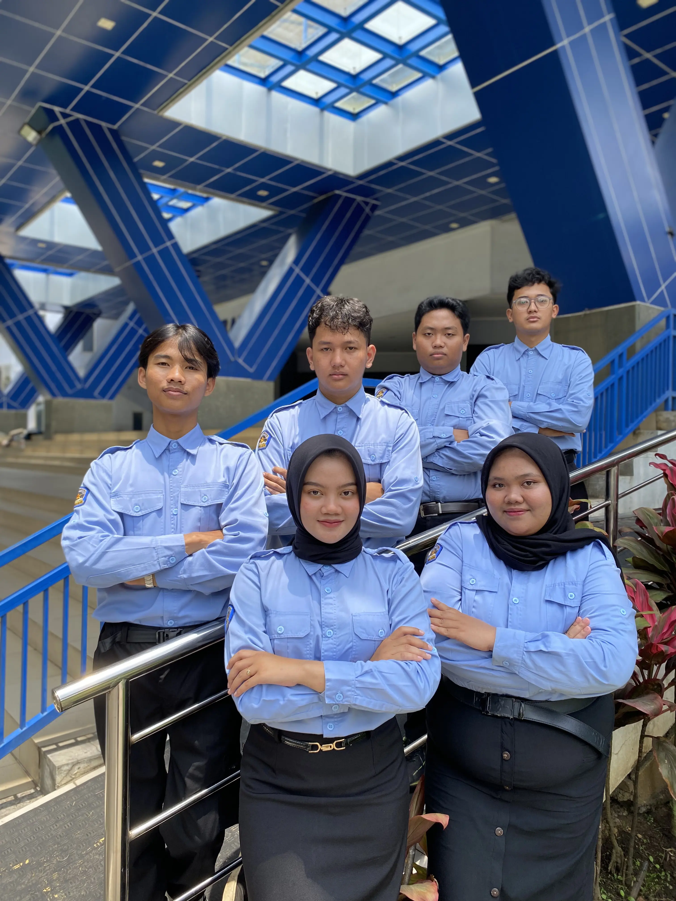

Menggali Tutur Lama dan Meresapi Nilai Makna
Melalui perpaduan narasi dan visual modern folklore, mari menghidupkan kembali cerita lisan dan meresapi nilai-nilai lokal Nusantara.

RECA (Reka Cipta Acarita)

Melalui perpaduan narasi dan visual modern folklore yang mengikat, platform ini menyoroti potret nyata permasalahan di sekitar, seperti lunturnya tradisi penuturan lisan dan pergeseran nilai lokal.
.webp)
Kaleidoskop Kisah
"Masa lalu menitip kisah, generasi kita yang memberi arah. Klik di bawah untuk mengabadikannya!"
"Aku pernah terperangkap dalam cangkang keemasan, namun cangkang yang kini mengurung kami adalah: dilupakan. Melalui jemarimu hari ini, patahkan kutukan dilupakan itu, tuliskan kembali kisah kami."
LEMARI KARYA
"Kumpulan Karya, Tutur Kisah, dan Apresiasi Pemenang Logic Insight 2026"
MUSTIKA ACARITA
"Para Penjaga Kisah Nusantara"

Judul Cerpen Finalis 1
Judul Cerpen Finalis 2
Judul Cerpen Finalis 3
Judul Cerpen Finalis 4
Judul Cerpen Finalis 5
Judul Cerpen Finalis 6
LOKA KARYA
"Kumpulan Seluruh Naskah Cerpen Peserta Logic Insight 2026"
THE JOURNEY OF KIRANA
Awakening Forgotten LegendsJelajahi petualangan interaktif dalam menghidupkan kembali legenda Nusantara yang terlupakan melalui game "The Journey of Kirana".
Mainkan Game
Profil UKM Pendidikan dan Penalaran Politeknik Negeri Malang
Apa Itu UKM PP?
Unit Kegiatan Mahasiswa Pendidikan dan Penalaran merupakan organisasi yang menjadi wadah kegiatan kepenulisan dan penelitian ilmiah yang mendukung pengembangan potensi mahasiswa di bidang pengetahuan, teknologi dan potensi nalar mahasiswa. Melalui berbagai program kerja yang meliputi kegiatan kepenulisan, event organizing, serta penerbitan karya ilmiah, para fungsionaris UKM PP diharapkan untuk dapat mengembangkan pola pikir kritis dan logis, kemampuan problem solving, dan skill berorganisasi yang dapat diterapkan di kehidupan sehari-hari, serta dapat menjadi inspirasi bagi lingkungan mereka.
UKM PP Punya Slogan, Ya?
Di balik setiap gerakan UKM Pendidikan dan Penalaran Politeknik Negeri Malang, tersimpan sebuah slogan yang menjadi landasan filosofi kami: “BHAKDHAWIKA.”
Slogan ini bukan hanya sekadar rangkaian kata, melainkan sebuah akronim yang merepresentasikan nilai-nilai luhur yang selalu dipegang teguh oleh setiap anggotanya.
Bhakdhawika terdiri dari empat unsur utama:
-
Bhaktya
Berarti berbakti. Setiap anggota UKM Pendidikan dan Penalaran diharapkan selalu mengabdi dengan tulus kepada negara, almamater, organisasi, agama, masyarakat, dan keluarga. Semangat pengabdian inilah yang menjadi landasan sikap dalam setiap langkah. -
Dharma
Berarti berbagi. Anggota UKM Pendidikan dan Penalaran berkewajiban untuk senantiasa berbagi ilmu pengetahuan, pengalaman, maupun sumber daya dengan sesama. Nilai ini menekankan pentingnya kebersamaan dan kontribusi tanpa pamrih sebagai individu sosial. -
Widagdha
Berarti belajar. Setiap anggota UKM Pendidikan dan Penalaran wajib untuk terus menggali dan mengembangkan ilmu pengetahuan, baik di bidang akademik maupun non-akademik. Dengan semangat belajar yang tekun dan berkelanjutan, anggota dapat menjadi pribadi yang kritis, inovatif, dan bermanfaat bagi lingkungannya. -
Karya
Berarti bekerja. Anggota UKM Pendidikan dan Penalaran tidak hanya belajar, tetapi juga menerapkan ilmu yang dimiliki melalui karya nyata. Karya menjadi wujud kontribusi yang dapat memberikan manfaat bagi masyarakat, almamater, dan bangsa.
Secara keseluruhan, Bhakdhawika adalah representasi dari aksi nyata, yaitu berbakti, berbagi, belajar, dan berkarya demi tercapainya tujuan bersama serta kebermanfaatan yang lebih luas.
"PP! Logis! PP! Logis PP! Logis!
PP Logis! Bhakdawika."
LAKON
(STRUKTUR ORGANISASI)

BADAN PENGURUS HARIAN (BPH)
"Menjadi pilar utama dalam mengoordinasikan, mengarahkan, dan memastikan seluruh roda organisasi UKM Pendidikan dan Penalaran berjalan selaras demi mewujudkan visi bersama."
BIDANG 1

"Memfasilitasi dan mengembangkan iklim kepenulisan serta penelitian ilmiah bagi seluruh fungsionaris dan mahasiswa."
PROGRAM KERJA
Berfokus pada pengembangan nalar, peningkatan kemampuan anggota, dan karya cipta.
WIRAKRAMA REKSA
Galeri Pencapaian & Prestasi UKM PP